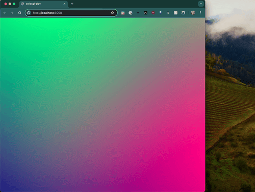
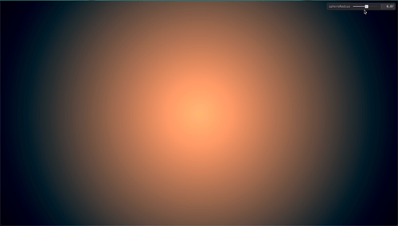
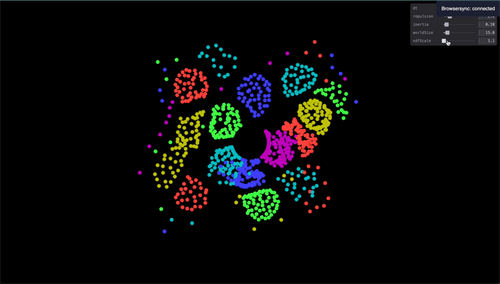

Playing with SwissGL
I went to a mini-hack event tonight hosted by David Bieber and wanted to use it as an excuse to dig into SwissGL.
Using some very basic HTML:
<!DOCTYPE html>
<html>
<head>
<meta charset="utf-8">
<meta name="viewport" content="width=device-width">
<title>swissgl-play</title>
<script src="./swissgl.js"></script>
</head>
<body>
<canvas id="c"></canvas>
<script src="script.js"></script>
</body>
</html>and a simple script:
// script.js
document.addEventListener('DOMContentLoaded', () => {
const canvas = document.getElementById('c');
if (canvas) {
const resizeCanvas = () => {
canvas.width = window.innerWidth;
canvas.height = window.innerHeight;
};
// Initial resize
resizeCanvas();
// Resize canvas when the window is resized
window.addEventListener('resize', resizeCanvas);
}
const glsl = SwissGL(canvas);
function render(t) {
t /= 1000; // ms to sec
glsl({t, // pass uniform 't' to GLSL
Mesh:[10, 10], // draw a 10x10 tessellated plane mesh
// Vertex shader expression returns vec4 vertex position in
// WebGL clip space. 'XY' and 'UV' are vec2 input vertex
// coordinates in [-1,1] and [0,1] ranges.
VP:`XY,0,1`,
// Fragment shader returns 'RGBA'
FP:`UV*0.8+sin(t*5.+XY.yx*2.0)*0.2,0.5,1`});
requestAnimationFrame(render);
}
requestAnimationFrame(render);
});you can get a basic gradient shader that you can move around and resize:

My main goal for the night was to reacquaint myself with SDFs, so I extended the gradient with a simple sphere animating its size over time:
// changing just the render function:
function render(t) {
t /= 1000; // ms to sec
glsl({
t, // Pass uniform 't' to GLSL
Mesh: [50, 50], // Draw a 50x50 tessellated plane mesh
// Vertex shader expression returns vec4 vertex position in
// WebGL clip space. 'XY' and 'UV' are vec2 input vertex
// coordinates in [-1,1] and [0,1] ranges.
VP: `XY, 0, 1`,
// Fragment shader returns 'RGBA'
FP: `
#ifdef GL_ES
precision highp float;
#endif
uniform vec2 iResolution;
float sdfSphere(vec3 p, float r) {
return length(p) - r;
}
vec3 sdfGradient(vec3 p) {
const float eps = 0.001;
return normalize(vec3(
sdfSphere(p + vec3(eps, 0.0, 0.0), 0.5) - sdfSphere(p - vec3(eps, 0.0, 0.0), 0.5),
sdfSphere(p + vec3(0.0, eps, 0.0), 0.5) - sdfSphere(p - vec3(0.0, eps, 0.0), 0.5),
sdfSphere(p + vec3(0.0, 0.0, eps), 0.5) - sdfSphere(p - vec3(0.0, 0.0, eps), 0.5)
));
}
void fragment() {
vec2 uv = gl_FragCoord.xy / iResolution.xy * 2.0 - 1.0;
uv.x *= iResolution.x / iResolution.y; // Correct aspect ratio
vec3 p = vec3(uv, 0.0); // Use uv instead of XY
float radius = sphereRadius * min(iResolution.x, iResolution.y) / max(iResolution.x, iResolution.y) - sin(t * 0.5); // Adjust radius
float sdfDist = sdfSphere(p, radius);
vec3 color = mix(vec3(1.0, 0.6, 0.4), vec3(0.2), sdfDist);
FOut = vec4(color, 1.0);
}`,
iResolution: [canvas.width, canvas.height],
sphereRadius: PARAMS.sphereRadius
});
requestAnimationFrame(render);
}This code adds a sphere to the center of the screen that grows and shrinks over time:

To finish it off I wanted one interactive element so I added Tweakpane to control the sphere's radius:
// ===== Add Tweakpane for sphere radius =====
const pane = new Tweakpane.Pane();
const PARAMS = {
sphereRadius: 0.5
};
pane.addInput(
PARAMS, 'sphereRadius',
{min: -10, max: 10, step: 0.01}
);
// ... later, in the render function:
FP: `
#ifdef GL_ES
precision highp float;
#endif
uniform vec2 iResolution;
float sdfSphere(vec3 p, float r) {
return length(p) - r;
}
vec3 sdfGradient(vec3 p) {
const float eps = 0.001;
return normalize(vec3(
sdfSphere(p + vec3(eps, 0.0, 0.0), 0.5) - sdfSphere(p - vec3(eps, 0.0, 0.0), 0.5),
sdfSphere(p + vec3(0.0, eps, 0.0), 0.5) - sdfSphere(p - vec3(0.0, eps, 0.0), 0.5),
sdfSphere(p + vec3(0.0, 0.0, eps), 0.5) - sdfSphere(p - vec3(0.0, 0.0, eps), 0.5)
));
}
void fragment() {
vec2 uv = gl_FragCoord.xy / iResolution.xy * 2.0 - 1.0;
uv.x *= iResolution.x / iResolution.y; // Correct aspect ratio
vec3 p = vec3(uv, 0.0); // Use uv instead of XY
// Here we include the sphereRadius from the PARAMS object
float radius = sphereRadius * min(iResolution.x, iResolution.y) / max(iResolution.x, iResolution.y) - sin(t * 0.5); // Adjust radius
float sdfDist = sdfSphere(p, radius);
vec3 color = mix(vec3(1.0, 0.6, 0.4), vec3(0.2), sdfDist);
FOut = vec4(color, 1.0);
}`,
iResolution: [canvas.width, canvas.height],
sphereRadius: PARAMS.sphereRadiusNow you can control the sphere's radius with a slider:

A bonus
I also wanted to modify the SwissGL README example to use an SDF as an obstacle for the particles, here's the particles bouncing off of an SDF circle:

I had a lot of fun hacking on this and I'm excited to keep messing with SwissGL in the future!
Code
All the code associated with this blog is available in this GitHub repository.
◼️ June 18, 2024 @cwervo